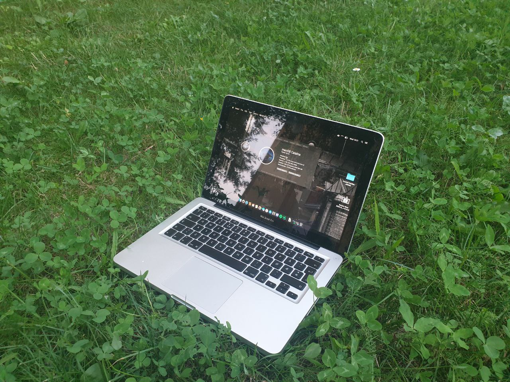

Tutaj macie liste moich komputerow z ktorych korzystam na codzien!
Moim glownym laptopem jest ten oto Macbook Pro z 2015, jest na nim zainstalowany macOS Sonoma, ma i5 5275U, 8gb ram i 128GB SSD
Nastepnie moj komputer do grania, ma on i5 8400, 16gb ramu oraz GTX'a 970 w wydaniu od MSI
Ten to chyba mój ulubiony komputer, jest to stary High-End którego złożyłem za jakieś 50zł. Ma Core2Quad Q6600, 4Gb DDR2 w Dual Channel, i Geforce'a 8600GT.
A to mój stary ultrabook samsunga, ma AMD A6 4455M, 4Gb wlutowanego ramu DDR3, i Radeona HD 7500G. Zainstalowany jest na nim Windows 7 i służy mi on do grania w stare gierki poza domem.
Kolejny i jak narazie ostatni komputer w mojej kolekcji, to ten netbook compaq, dostałem go kiedyś od sapera, ma Atoma N270, 2Gb DDR2, i GMA950.
oprócz tego mam jeszcze Optiplexa 3020 SFF (i5 4590S, 8GB DDR3, GTX 745). Oraz Optiplexa 740 SFF (Athlon 64 X2 6000+, 2GB DDR2 i jakaś integra od nvidii, mega słaba). Nie są one jednakże nigdzie podpięte więc może kiedyś dodam ich zdjęcia.
Wiecej wkrotce!
~[ Powrot na strone glowna ]~